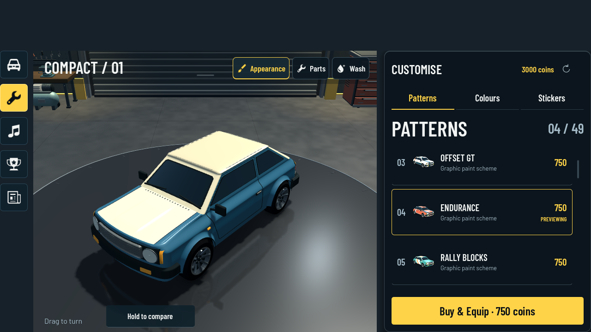

Actual Garage frames. Paint travels from the rear toward the nose over 0.72 seconds. Saved paint, parts, camera, local dirt and equipped comparison retain their existing behavior.

Pattern halfway · Electric halfway · Commands and checks
Compatibility and desktop Mobile/Vulkan checks; physical-device testing was not performed. The replay uses captured progress frames with the transition's sine easing timing.